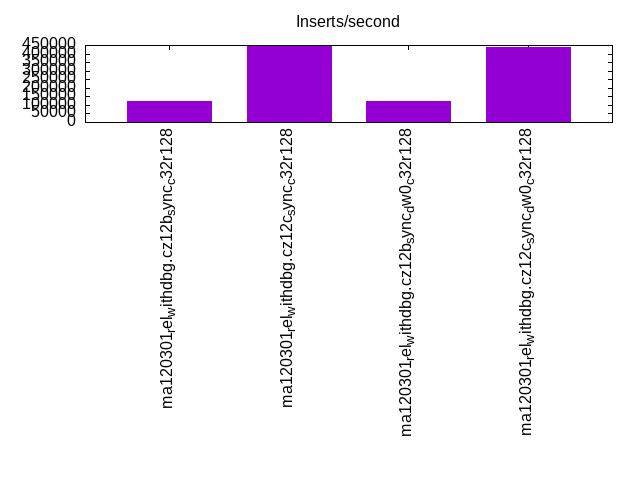
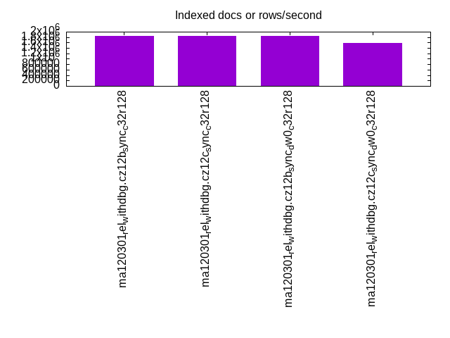
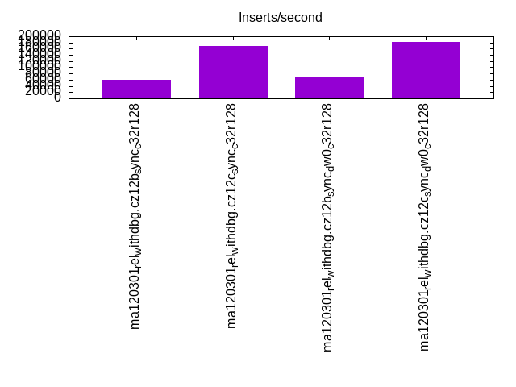
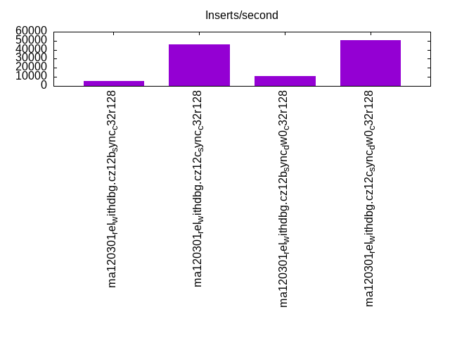
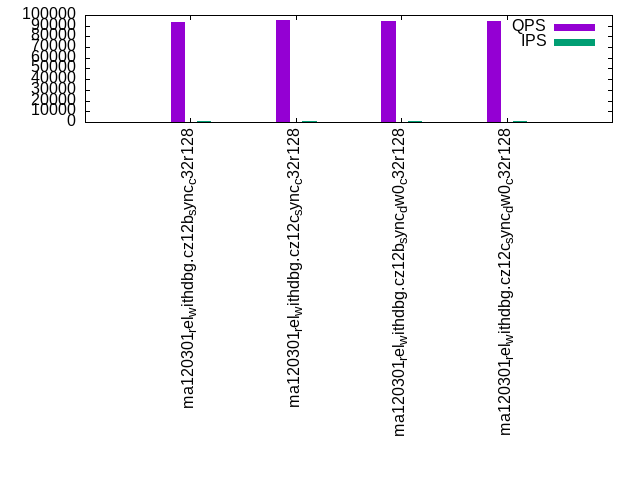
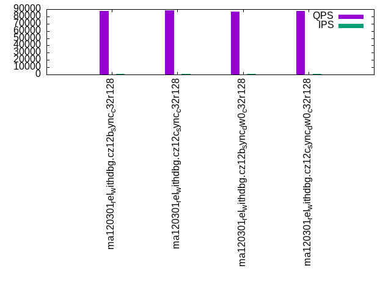
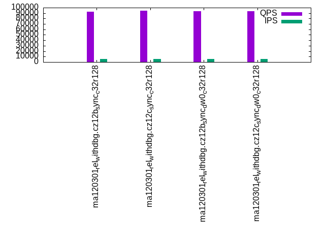
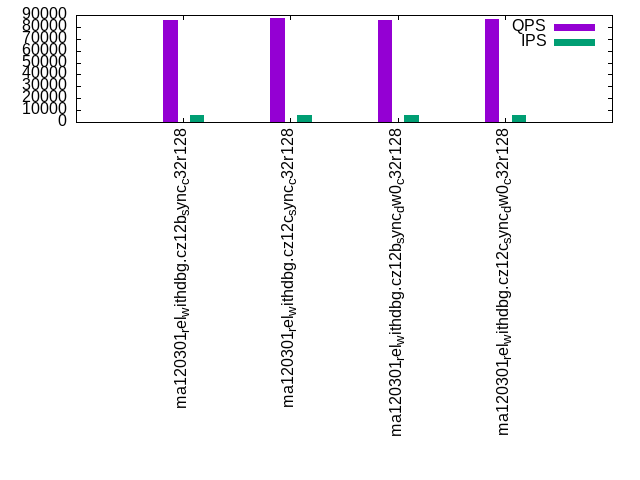
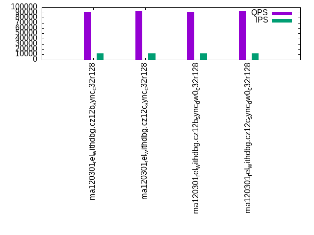
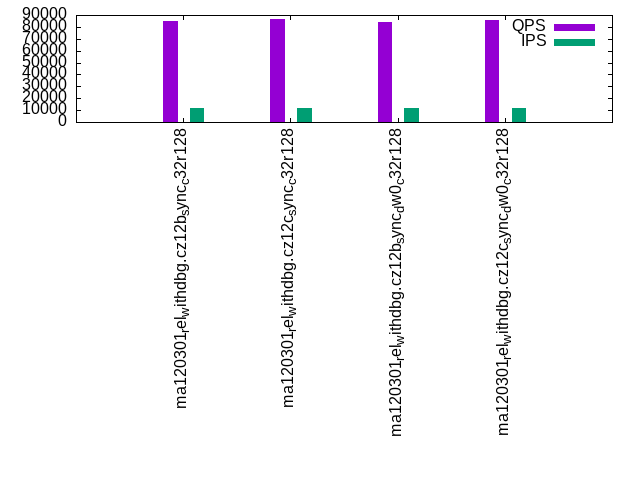

This is a report for the insert benchmark with 120M docs and 12 client(s). It is generated by scripts (bash, awk, sed) and Tufte might not be impressed. An overview of the insert benchmark is here and a short update is here. Below, by DBMS, I mean DBMS+version.config. An example is my8020.c10b40 where my means MySQL, 8020 is version 8.0.20 and c10b40 is the name for the configuration file.
The test server has 32 cores, 128G RAM and 1 NVMe device. The benchmark was run with 12 clients and there were 1 or 3 connections per client (1 for queries or inserts without rate limits, 1+1 for rate limited inserts+deletes). It uses 8 tables with a table per client. It loads 10M rows per table without secondary indexes, creates 3 secondary indexes per table, then inserts 16m+4m rows per table with a delete per insert to avoid growing the table. It then does 6 read+write tests for 1800s each that do queries as fast as possible with 100,100,500,500,1000,1000 inserts/s and the same for deletes/s per client concurrent with the queries. The database is cached. Clients and the DBMS share one server.
The tested DBMS are:
The numbers are inserts/s for l.i0, l.i1 and l.i2, indexed docs (or rows) /s for l.x and queries/s for qr100, qp100 thru qr1000, qp1000" The values are the average rate over the entire test for inserts (IPS) and queries (QPS). The range of values for IPS and QPS is split into 3 parts: bottom 25%, middle 50%, top 25%. Values in the bottom 25% have a red background, values in the top 25% have a green background and values in the middle have no color. A gray background is used for values that can be ignored because the DBMS did not sustain the target insert rate. Red backgrounds are not used when the minimum value is within 80% of the max value.
| dbms | l.i0 | l.x | l.i1 | l.i2 | qr100 | qp100 | qr500 | qp500 | qr1000 | qp1000 |
|---|---|---|---|---|---|---|---|---|---|---|
| ma120301_rel_withdbg.cz12b_sync_c32r128 | 122075 | 1846155 | 60302 | 5687 | 93858 | 87164 | 92741 | 86160 | 91479 | 84817 |
| ma120301_rel_withdbg.cz12c_sync_c32r128 | 442804 | 1846155 | 168717 | 46243 | 95224 | 88216 | 94241 | 87328 | 93047 | 86250 |
| ma120301_rel_withdbg.cz12b_sync_dw0_c32r128 | 122449 | 1846155 | 68596 | 10999 | 94346 | 86713 | 93321 | 85776 | 91952 | 84278 |
| ma120301_rel_withdbg.cz12c_sync_dw0_c32r128 | 441176 | 1578949 | 182857 | 50633 | 94480 | 87437 | 93628 | 86545 | 92626 | 85407 |
This table has relative throughput, throughput for the DBMS relative to the DBMS in the first line, using the absolute throughput from the previous table. Values less than 0.95 have a yellow background. Values greater than 1.05 have a blue background.
| dbms | l.i0 | l.x | l.i1 | l.i2 | qr100 | qp100 | qr500 | qp500 | qr1000 | qp1000 |
|---|---|---|---|---|---|---|---|---|---|---|
| ma120301_rel_withdbg.cz12b_sync_c32r128 | 1.00 | 1.00 | 1.00 | 1.00 | 1.00 | 1.00 | 1.00 | 1.00 | 1.00 | 1.00 |
| ma120301_rel_withdbg.cz12c_sync_c32r128 | 3.63 | 1.00 | 2.80 | 8.13 | 1.01 | 1.01 | 1.02 | 1.01 | 1.02 | 1.02 |
| ma120301_rel_withdbg.cz12b_sync_dw0_c32r128 | 1.00 | 1.00 | 1.14 | 1.93 | 1.01 | 0.99 | 1.01 | 1.00 | 1.01 | 0.99 |
| ma120301_rel_withdbg.cz12c_sync_dw0_c32r128 | 3.61 | 0.86 | 3.03 | 8.90 | 1.01 | 1.00 | 1.01 | 1.00 | 1.01 | 1.01 |
This lists the average rate of inserts/s for the tests that do inserts concurrent with queries. For such tests the query rate is listed in the table above. The read+write tests are setup so that the insert rate should match the target rate every second. Cells that are not at least 95% of the target have a red background to indicate a failure to satisfy the target.
| dbms | qr100.L1 | qp100.L2 | qr500.L3 | qp500.L4 | qr1000.L5 | qp1000.L6 |
|---|---|---|---|---|---|---|
| ma120301_rel_withdbg.cz12b_sync_c32r128 | 1192 | 1192 | 5960 | 5964 | 11920 | 11920 |
| ma120301_rel_withdbg.cz12c_sync_c32r128 | 1192 | 1192 | 5960 | 5964 | 11927 | 11927 |
| ma120301_rel_withdbg.cz12b_sync_dw0_c32r128 | 1192 | 1192 | 5960 | 5964 | 11920 | 11920 |
| ma120301_rel_withdbg.cz12c_sync_dw0_c32r128 | 1192 | 1192 | 5960 | 5964 | 11920 | 11920 |
| target | 1200 | 1200 | 6000 | 6000 | 12000 | 12000 |
l.i0: load without secondary indexes. Graphs for performance per 1-second interval are here.
Average throughput:

Insert response time histogram: each cell has the percentage of responses that take <= the time in the header and max is the max response time in seconds. For the max column values in the top 25% of the range have a red background and in the bottom 25% of the range have a green background. The red background is not used when the min value is within 80% of the max value.
| dbms | 256us | 1ms | 4ms | 16ms | 64ms | 256ms | 1s | 4s | 16s | gt | max |
|---|---|---|---|---|---|---|---|---|---|---|---|
| ma120301_rel_withdbg.cz12b_sync_c32r128 | 0.289 | 99.662 | 0.048 | 0.001 | 0.201 | ||||||
| ma120301_rel_withdbg.cz12c_sync_c32r128 | 98.474 | 1.521 | 0.003 | 0.002 | 0.220 | ||||||
| ma120301_rel_withdbg.cz12b_sync_dw0_c32r128 | 0.298 | 99.645 | 0.058 | 0.026 | |||||||
| ma120301_rel_withdbg.cz12c_sync_dw0_c32r128 | 98.454 | 1.545 | 0.001 | 0.018 |
Performance metrics for the DBMS listed above. Some are normalized by throughput, others are not. Legend for results is here.
ips qps rps rmbps wps wmbps rpq rkbpq wpi wkbpi csps cpups cspq cpupq dbgb1 dbgb2 rss maxop p50 p99 tag 122075 0 0 0.0 3198.5 50.3 0.000 0.000 0.026 0.422 41856 6.5 0.343 17 8.0 108.8 9.8 0.201 10599 7299 ma120301_rel_withdbg.cz12b_sync_c32r128 442804 0 0 0.0 4459.8 175.4 0.000 0.000 0.010 0.406 94701 20.8 0.214 15 8.0 109.3 10.0 0.220 39895 37195 ma120301_rel_withdbg.cz12c_sync_c32r128 122449 0 0 0.0 3213.9 50.5 0.000 0.000 0.026 0.422 41973 6.5 0.343 17 8.0 108.8 9.9 0.026 10599 7299 ma120301_rel_withdbg.cz12b_sync_dw0_c32r128 441176 0 0 0.0 4466.2 175.4 0.000 0.000 0.010 0.407 94582 20.9 0.214 15 8.0 109.3 10.0 0.018 39895 37995 ma120301_rel_withdbg.cz12c_sync_dw0_c32r128
Average values from iostat.
r/s rkB/s rrqm/s %rrqm r_await rareq-s w/s wkB/s wrqm/s %wrqm w_await wareq-s d/s dkB/s drqm/s %drqm d_await dareq-s f/s f_await aqu-sz %util 0.029 0.457 0.000 0.000 0.001 0.082 3198.5 51523.3 4187.1 56.74 0.452 16.10 23.37 1222.0 0.000 0.000 0.469 18.31 1040.6 0.445 1.923 96.67 ma120301_rel_withdbg.cz12b_sync_c32r128 0.100 1.600 0.000 0.000 0.002 0.296 4459.8 179591 3237.7 42.88 0.299 40.80 1.400 9.941 0.000 0.000 1.553 6.791 820.0 0.440 1.683 81.93 ma120301_rel_withdbg.cz12c_sync_c32r128 0.029 0.457 0.000 0.000 0.001 0.082 3213.9 51694.1 4190.9 56.63 0.673 16.07 21.29 1188.1 0.000 0.000 0.456 17.45 1043.3 0.444 2.742 96.55 ma120301_rel_withdbg.cz12b_sync_dw0_c32r128 0.100 1.600 0.000 0.000 0.002 0.296 4466.2 179647 3238.4 42.95 0.300 40.77 5.489 33.05 0.000 0.000 1.602 9.271 816.3 0.440 1.685 82.02 ma120301_rel_withdbg.cz12c_sync_dw0_c32r128
l.x: create secondary indexes.
Average throughput:

Performance metrics for the DBMS listed above. Some are normalized by throughput, others are not. Legend for results is here.
ips qps rps rmbps wps wmbps rpq rkbpq wpi wkbpi csps cpups cspq cpupq dbgb1 dbgb2 rss maxop p50 p99 tag 1846155 0 0 0.0 13195.5 1269.9 0.000 0.000 0.007 0.704 19338 30.9 0.010 5 16.9 117.7 17.9 0.012 NA NA ma120301_rel_withdbg.cz12b_sync_c32r128 1846155 0 0 0.0 12738.4 1262.1 0.000 0.000 0.007 0.700 17436 31.0 0.009 5 16.9 118.2 17.9 0.008 NA NA ma120301_rel_withdbg.cz12c_sync_c32r128 1846155 0 0 0.0 13225.8 1269.8 0.000 0.000 0.007 0.704 20094 30.9 0.011 5 16.9 117.7 18.0 0.013 NA NA ma120301_rel_withdbg.cz12b_sync_dw0_c32r128 1578949 0 0 0.0 11672.3 1102.9 0.000 0.000 0.007 0.715 18555 27.8 0.012 6 16.9 118.2 17.7 0.007 NA NA ma120301_rel_withdbg.cz12c_sync_dw0_c32r128
Average values from iostat.
r/s rkB/s rrqm/s %rrqm r_await rareq-s w/s wkB/s wrqm/s %wrqm w_await wareq-s d/s dkB/s drqm/s %drqm d_await dareq-s f/s f_await aqu-sz %util 0.138 16.00 0.000 0.000 0.009 11.08 13195.5 1300421 407.0 2.832 0.204 89.04 24.34 159209 0.000 0.000 1.245 4139.1 82.48 0.602 3.185 38.77 ma120301_rel_withdbg.cz12b_sync_c32r128 0.046 2.954 0.000 0.000 0.000 8.000 12738.4 1292379 380.9 2.775 0.217 94.55 23.22 152279 0.000 0.000 1.258 4257.5 83.46 0.641 3.307 38.38 ma120301_rel_withdbg.cz12c_sync_c32r128 0.169 18.40 0.000 0.000 0.048 17.08 13225.8 1300292 405.1 2.848 0.237 88.85 24.00 152276 0.000 0.000 1.284 4121.1 82.02 0.631 3.732 38.97 ma120301_rel_withdbg.cz12b_sync_dw0_c32r128 0.013 0.213 0.000 0.000 0.067 1.067 11672.3 1129328 326.6 2.410 0.188 85.10 19.21 131986 0.000 0.000 1.101 3835.5 71.07 0.571 2.763 34.08 ma120301_rel_withdbg.cz12c_sync_dw0_c32r128
l.i1: continue load after secondary indexes created with 50 inserts per transaction. Graphs for performance per 1-second interval are here.
Average throughput:

Insert response time histogram: each cell has the percentage of responses that take <= the time in the header and max is the max response time in seconds. For the max column values in the top 25% of the range have a red background and in the bottom 25% of the range have a green background. The red background is not used when the min value is within 80% of the max value.
| dbms | 256us | 1ms | 4ms | 16ms | 64ms | 256ms | 1s | 4s | 16s | gt | max |
|---|---|---|---|---|---|---|---|---|---|---|---|
| ma120301_rel_withdbg.cz12b_sync_c32r128 | 0.013 | 91.794 | 8.163 | 0.028 | 0.002 | 0.907 | |||||
| ma120301_rel_withdbg.cz12c_sync_c32r128 | 84.055 | 15.473 | 0.467 | 0.005 | 0.226 | ||||||
| ma120301_rel_withdbg.cz12b_sync_dw0_c32r128 | 0.020 | 95.291 | 4.684 | 0.004 | nonzero | nonzero | 1.073 | ||||
| ma120301_rel_withdbg.cz12c_sync_dw0_c32r128 | 87.848 | 12.005 | 0.147 | 0.047 |
Delete response time histogram: each cell has the percentage of responses that take <= the time in the header and max is the max response time in seconds. For the max column values in the top 25% of the range have a red background and in the bottom 25% of the range have a green background. The red background is not used when the min value is within 80% of the max value.
| dbms | 256us | 1ms | 4ms | 16ms | 64ms | 256ms | 1s | 4s | 16s | gt | max |
|---|---|---|---|---|---|---|---|---|---|---|---|
| ma120301_rel_withdbg.cz12b_sync_c32r128 | 0.071 | 92.320 | 7.583 | 0.024 | 0.002 | nonzero | 1.084 | ||||
| ma120301_rel_withdbg.cz12c_sync_c32r128 | 87.513 | 12.086 | 0.396 | 0.004 | 0.225 | ||||||
| ma120301_rel_withdbg.cz12b_sync_dw0_c32r128 | 0.097 | 95.549 | 4.350 | 0.003 | 0.001 | nonzero | 1.073 | ||||
| ma120301_rel_withdbg.cz12c_sync_dw0_c32r128 | 90.502 | 9.360 | 0.137 | 0.046 |
Performance metrics for the DBMS listed above. Some are normalized by throughput, others are not. Legend for results is here.
ips qps rps rmbps wps wmbps rpq rkbpq wpi wkbpi csps cpups cspq cpupq dbgb1 dbgb2 rss maxop p50 p99 tag 60302 0 0 0.0 8633.4 230.6 0.000 0.000 0.143 3.915 76998 16.9 1.277 90 22.2 123.0 23.9 0.907 5599 1650 ma120301_rel_withdbg.cz12b_sync_c32r128 168717 0 0 0.0 12998.5 470.1 0.000 0.000 0.077 2.853 139901 49.9 0.829 95 26.2 128.4 29.0 0.226 15698 5299 ma120301_rel_withdbg.cz12c_sync_c32r128 68596 0 0 0.0 8954.9 203.7 0.000 0.000 0.131 3.041 84942 19.2 1.238 90 22.4 123.2 24.1 1.073 6799 2100 ma120301_rel_withdbg.cz12b_sync_dw0_c32r128 182857 0 0 0.0 12225.6 429.1 0.000 0.000 0.067 2.403 139362 55.6 0.762 97 23.2 124.5 24.9 0.047 16898 5149 ma120301_rel_withdbg.cz12c_sync_dw0_c32r128
Average values from iostat.
r/s rkB/s rrqm/s %rrqm r_await rareq-s w/s wkB/s wrqm/s %wrqm w_await wareq-s d/s dkB/s drqm/s %drqm d_await dareq-s f/s f_await aqu-sz %util 0.001 0.004 0.000 0.000 0.002 0.019 8633.4 236106 2993.8 25.89 0.808 27.24 67.85 2397.3 0.000 0.000 0.978 20.75 1462.4 0.735 6.966 97.22 ma120301_rel_withdbg.cz12b_sync_c32r128 0.000 0.000 0.000 0.000 0.000 0.000 12998.5 481341 706.7 5.148 0.285 37.14 1.395 43.50 0.000 0.000 1.752 27.91 1534.6 0.468 4.388 76.21 ma120301_rel_withdbg.cz12c_sync_c32r128 0.001 0.004 0.000 0.000 0.002 0.021 8954.9 208582 3386.0 27.57 0.943 23.14 63.05 2655.9 0.000 0.000 0.931 17.57 1288.5 0.644 6.836 96.16 ma120301_rel_withdbg.cz12b_sync_dw0_c32r128 0.000 0.000 0.000 0.000 0.000 0.000 12225.6 439431 353.9 2.640 0.198 36.01 1.113 6.369 0.000 0.000 1.577 5.767 1039.8 0.430 2.865 65.20 ma120301_rel_withdbg.cz12c_sync_dw0_c32r128
l.i2: continue load after secondary indexes created with 5 inserts per transaction. Graphs for performance per 1-second interval are here.
Average throughput:

Insert response time histogram: each cell has the percentage of responses that take <= the time in the header and max is the max response time in seconds. For the max column values in the top 25% of the range have a red background and in the bottom 25% of the range have a green background. The red background is not used when the min value is within 80% of the max value.
| dbms | 256us | 1ms | 4ms | 16ms | 64ms | 256ms | 1s | 4s | 16s | gt | max |
|---|---|---|---|---|---|---|---|---|---|---|---|
| ma120301_rel_withdbg.cz12b_sync_c32r128 | 0.110 | 74.788 | 25.094 | 0.009 | 0.181 | ||||||
| ma120301_rel_withdbg.cz12c_sync_c32r128 | 0.988 | 98.482 | 0.523 | 0.006 | nonzero | nonzero | nonzero | 1.236 | |||
| ma120301_rel_withdbg.cz12b_sync_dw0_c32r128 | 0.229 | 99.314 | 0.453 | 0.003 | 0.176 | ||||||
| ma120301_rel_withdbg.cz12c_sync_dw0_c32r128 | 2.442 | 97.502 | 0.054 | 0.002 | 0.036 |
Delete response time histogram: each cell has the percentage of responses that take <= the time in the header and max is the max response time in seconds. For the max column values in the top 25% of the range have a red background and in the bottom 25% of the range have a green background. The red background is not used when the min value is within 80% of the max value.
| dbms | 256us | 1ms | 4ms | 16ms | 64ms | 256ms | 1s | 4s | 16s | gt | max |
|---|---|---|---|---|---|---|---|---|---|---|---|
| ma120301_rel_withdbg.cz12b_sync_c32r128 | 0.089 | 74.711 | 25.190 | 0.009 | 0.181 | ||||||
| ma120301_rel_withdbg.cz12c_sync_c32r128 | 1.125 | 98.359 | 0.510 | 0.006 | nonzero | nonzero | nonzero | 1.236 | |||
| ma120301_rel_withdbg.cz12b_sync_dw0_c32r128 | 0.169 | 99.372 | 0.455 | 0.004 | 0.176 | ||||||
| ma120301_rel_withdbg.cz12c_sync_dw0_c32r128 | 1.143 | 98.802 | 0.053 | 0.002 | 0.036 |
Performance metrics for the DBMS listed above. Some are normalized by throughput, others are not. Legend for results is here.
ips qps rps rmbps wps wmbps rpq rkbpq wpi wkbpi csps cpups cspq cpupq dbgb1 dbgb2 rss maxop p50 p99 tag 5687 0 0 0.0 2583.7 28.2 0.000 0.000 0.454 5.073 46380 4.2 8.155 236 22.2 123.0 24.0 0.181 310 190 ma120301_rel_withdbg.cz12b_sync_c32r128 46243 0 0 0.0 7695.4 182.1 0.000 0.000 0.166 4.033 278406 26.9 6.021 186 26.2 128.4 29.0 1.236 3930 1530 ma120301_rel_withdbg.cz12c_sync_c32r128 10999 0 0 0.0 4739.4 45.1 0.000 0.000 0.431 4.197 89614 7.4 8.147 215 22.4 123.2 24.1 0.176 950 310 ma120301_rel_withdbg.cz12b_sync_dw0_c32r128 50633 0 0 0.0 7711.7 146.7 0.000 0.000 0.152 2.967 304523 29.0 6.014 183 23.2 124.5 25.0 0.036 4344 1980 ma120301_rel_withdbg.cz12c_sync_dw0_c32r128
Average values from iostat.
r/s rkB/s rrqm/s %rrqm r_await rareq-s w/s wkB/s wrqm/s %wrqm w_await wareq-s d/s dkB/s drqm/s %drqm d_await dareq-s f/s f_await aqu-sz %util 0.000 0.000 0.000 0.000 0.001 0.002 2583.7 28848.6 1442.9 36.29 1.212 10.66 0.013 0.801 0.000 0.000 0.143 3.908 971.8 1.303 3.551 98.70 ma120301_rel_withdbg.cz12b_sync_c32r128 0.000 0.000 0.000 0.000 0.000 0.000 7695.4 186498 45.57 0.476 0.343 24.05 0.761 3.486 0.000 0.000 1.772 3.723 1881.3 0.488 3.370 87.80 ma120301_rel_withdbg.cz12c_sync_c32r128 0.000 0.000 0.000 0.000 0.000 0.000 4739.4 46159.3 2720.3 36.53 0.483 9.699 0.019 0.083 0.000 0.000 0.158 0.371 1745.5 0.549 3.163 97.94 ma120301_rel_withdbg.cz12b_sync_dw0_c32r128 0.000 0.000 0.000 0.000 0.000 0.000 7711.7 150218 6.290 0.083 0.270 19.69 0.671 2.866 0.000 0.000 1.471 3.235 1719.5 0.454 2.858 85.23 ma120301_rel_withdbg.cz12c_sync_dw0_c32r128
qr100.L1: range queries with 100 insert/s per client. Graphs for performance per 1-second interval are here.
Average throughput:

Query response time histogram: each cell has the percentage of responses that take <= the time in the header and max is the max response time in seconds. For max values in the top 25% of the range have a red background and in the bottom 25% of the range have a green background. The red background is not used when the min value is within 80% of the max value.
| dbms | 256us | 1ms | 4ms | 16ms | 64ms | 256ms | 1s | 4s | 16s | gt | max |
|---|---|---|---|---|---|---|---|---|---|---|---|
| ma120301_rel_withdbg.cz12b_sync_c32r128 | 99.991 | 0.009 | nonzero | 0.003 | |||||||
| ma120301_rel_withdbg.cz12c_sync_c32r128 | 99.992 | 0.008 | nonzero | 0.002 | |||||||
| ma120301_rel_withdbg.cz12b_sync_dw0_c32r128 | 99.991 | 0.009 | nonzero | 0.004 | |||||||
| ma120301_rel_withdbg.cz12c_sync_dw0_c32r128 | 99.992 | 0.008 | nonzero | 0.002 |
Insert response time histogram: each cell has the percentage of responses that take <= the time in the header and max is the max response time in seconds. For max values in the top 25% of the range have a red background and in the bottom 25% of the range have a green background. The red background is not used when the min value is within 80% of the max value.
| dbms | 256us | 1ms | 4ms | 16ms | 64ms | 256ms | 1s | 4s | 16s | gt | max |
|---|---|---|---|---|---|---|---|---|---|---|---|
| ma120301_rel_withdbg.cz12b_sync_c32r128 | 1.285 | 95.921 | 2.141 | 0.653 | 0.149 | ||||||
| ma120301_rel_withdbg.cz12c_sync_c32r128 | 89.856 | 8.838 | 1.306 | 0.059 | |||||||
| ma120301_rel_withdbg.cz12b_sync_dw0_c32r128 | 0.252 | 93.831 | 4.076 | 1.840 | 0.154 | ||||||
| ma120301_rel_withdbg.cz12c_sync_dw0_c32r128 | 85.771 | 11.579 | 2.639 | 0.012 | 0.072 |
Delete response time histogram: each cell has the percentage of responses that take <= the time in the header and max is the max response time in seconds. For max values in the top 25% of the range have a red background and in the bottom 25% of the range have a green background. The red background is not used when the min value is within 80% of the max value.
| dbms | 256us | 1ms | 4ms | 16ms | 64ms | 256ms | 1s | 4s | 16s | gt | max |
|---|---|---|---|---|---|---|---|---|---|---|---|
| ma120301_rel_withdbg.cz12b_sync_c32r128 | 1.912 | 95.363 | 2.088 | 0.637 | 0.149 | ||||||
| ma120301_rel_withdbg.cz12c_sync_c32r128 | 90.896 | 7.866 | 1.238 | 0.057 | |||||||
| ma120301_rel_withdbg.cz12b_sync_dw0_c32r128 | 0.840 | 93.326 | 4.060 | 1.773 | 0.169 | ||||||
| ma120301_rel_withdbg.cz12c_sync_dw0_c32r128 | 86.396 | 11.021 | 2.574 | 0.009 | 0.069 |
Performance metrics for the DBMS listed above. Some are normalized by throughput, others are not. Legend for results is here.
ips qps rps rmbps wps wmbps rpq rkbpq wpi wkbpi csps cpups cspq cpupq dbgb1 dbgb2 rss maxop p50 p99 tag 1192 93858 0 0.0 112.9 1.9 0.000 0.000 0.095 1.629 538698 40.2 5.740 137 22.2 123.0 24.0 0.003 7887 7807 ma120301_rel_withdbg.cz12b_sync_c32r128 1192 95224 0 0.0 63.2 1.6 0.000 0.000 0.053 1.382 546036 39.9 5.734 134 26.2 128.4 29.0 0.002 7999 7919 ma120301_rel_withdbg.cz12c_sync_c32r128 1192 94346 0 0.0 110.7 1.9 0.000 0.000 0.093 1.620 541420 40.1 5.739 136 22.4 123.2 24.1 0.004 7903 7839 ma120301_rel_withdbg.cz12b_sync_dw0_c32r128 1192 94480 0 0.0 61.1 1.6 0.000 0.000 0.051 1.407 541740 39.9 5.734 135 23.2 124.5 25.0 0.002 7983 7903 ma120301_rel_withdbg.cz12c_sync_dw0_c32r128
Average values from iostat.
r/s rkB/s rrqm/s %rrqm r_await rareq-s w/s wkB/s wrqm/s %wrqm w_await wareq-s d/s dkB/s drqm/s %drqm d_await dareq-s f/s f_await aqu-sz %util 0.004 0.010 0.000 0.000 0.001 0.006 112.9 1942.3 91.17 44.66 0.580 17.36 0.286 14.21 0.000 0.000 0.031 1.278 47.66 0.602 0.090 3.352 ma120301_rel_withdbg.cz12b_sync_c32r128 0.000 0.000 0.000 0.000 0.000 0.000 63.18 1647.2 3.101 4.927 0.559 27.05 0.001 0.002 0.000 0.000 0.006 0.011 28.19 0.628 0.045 1.947 ma120301_rel_withdbg.cz12c_sync_c32r128 0.000 0.000 0.000 0.000 0.000 0.000 110.7 1931.5 90.18 44.81 0.692 17.68 0.283 3.715 0.000 0.000 0.037 0.422 46.56 0.733 0.101 3.707 ma120301_rel_withdbg.cz12b_sync_dw0_c32r128 0.000 0.000 0.000 0.000 0.000 0.000 61.11 1676.9 3.191 5.244 0.640 28.67 0.001 0.004 0.000 0.000 0.006 0.022 26.84 0.742 0.048 1.914 ma120301_rel_withdbg.cz12c_sync_dw0_c32r128
qp100.L2: point queries with 100 insert/s per client. Graphs for performance per 1-second interval are here.
Average throughput:

Query response time histogram: each cell has the percentage of responses that take <= the time in the header and max is the max response time in seconds. For max values in the top 25% of the range have a red background and in the bottom 25% of the range have a green background. The red background is not used when the min value is within 80% of the max value.
| dbms | 256us | 1ms | 4ms | 16ms | 64ms | 256ms | 1s | 4s | 16s | gt | max |
|---|---|---|---|---|---|---|---|---|---|---|---|
| ma120301_rel_withdbg.cz12b_sync_c32r128 | 99.993 | 0.007 | nonzero | 0.003 | |||||||
| ma120301_rel_withdbg.cz12c_sync_c32r128 | 99.992 | 0.008 | nonzero | 0.003 | |||||||
| ma120301_rel_withdbg.cz12b_sync_dw0_c32r128 | 99.991 | 0.009 | nonzero | 0.002 | |||||||
| ma120301_rel_withdbg.cz12c_sync_dw0_c32r128 | 99.992 | 0.008 | nonzero | 0.003 |
Insert response time histogram: each cell has the percentage of responses that take <= the time in the header and max is the max response time in seconds. For max values in the top 25% of the range have a red background and in the bottom 25% of the range have a green background. The red background is not used when the min value is within 80% of the max value.
| dbms | 256us | 1ms | 4ms | 16ms | 64ms | 256ms | 1s | 4s | 16s | gt | max |
|---|---|---|---|---|---|---|---|---|---|---|---|
| ma120301_rel_withdbg.cz12b_sync_c32r128 | 1.178 | 98.523 | 0.201 | 0.097 | 0.151 | ||||||
| ma120301_rel_withdbg.cz12c_sync_c32r128 | 90.021 | 8.993 | 0.986 | 0.058 | |||||||
| ma120301_rel_withdbg.cz12b_sync_dw0_c32r128 | 0.468 | 99.273 | 0.259 | 0.061 | |||||||
| ma120301_rel_withdbg.cz12c_sync_dw0_c32r128 | 94.977 | 4.653 | 0.370 | 0.061 |
Delete response time histogram: each cell has the percentage of responses that take <= the time in the header and max is the max response time in seconds. For max values in the top 25% of the range have a red background and in the bottom 25% of the range have a green background. The red background is not used when the min value is within 80% of the max value.
| dbms | 256us | 1ms | 4ms | 16ms | 64ms | 256ms | 1s | 4s | 16s | gt | max |
|---|---|---|---|---|---|---|---|---|---|---|---|
| ma120301_rel_withdbg.cz12b_sync_c32r128 | 3.370 | 96.336 | 0.204 | 0.090 | 0.151 | ||||||
| ma120301_rel_withdbg.cz12c_sync_c32r128 | 92.479 | 6.562 | 0.958 | 0.056 | |||||||
| ma120301_rel_withdbg.cz12b_sync_dw0_c32r128 | 1.593 | 98.176 | 0.231 | 0.056 | |||||||
| ma120301_rel_withdbg.cz12c_sync_dw0_c32r128 | 95.252 | 4.394 | 0.354 | 0.058 |
Performance metrics for the DBMS listed above. Some are normalized by throughput, others are not. Legend for results is here.
ips qps rps rmbps wps wmbps rpq rkbpq wpi wkbpi csps cpups cspq cpupq dbgb1 dbgb2 rss maxop p50 p99 tag 1192 87164 0 0.0 145.7 2.2 0.000 0.000 0.122 1.894 505537 39.9 5.800 146 22.2 123.0 24.0 0.003 7343 7263 ma120301_rel_withdbg.cz12b_sync_c32r128 1192 88216 0 0.0 55.2 1.6 0.000 0.000 0.046 1.372 510973 40.7 5.792 148 26.2 128.4 29.0 0.003 7375 7311 ma120301_rel_withdbg.cz12c_sync_c32r128 1192 86713 0 0.0 120.5 1.9 0.000 0.000 0.101 1.668 502841 39.9 5.799 147 22.4 123.2 24.1 0.002 7263 7183 ma120301_rel_withdbg.cz12b_sync_dw0_c32r128 1192 87437 0 0.0 73.5 1.7 0.000 0.000 0.062 1.435 506570 39.9 5.794 146 23.2 124.5 24.9 0.003 7327 7247 ma120301_rel_withdbg.cz12c_sync_dw0_c32r128
Average values from iostat.
r/s rkB/s rrqm/s %rrqm r_await rareq-s w/s wkB/s wrqm/s %wrqm w_await wareq-s d/s dkB/s drqm/s %drqm d_await dareq-s f/s f_await aqu-sz %util 0.000 0.000 0.000 0.000 0.000 0.000 145.7 2257.4 113.2 44.69 0.485 15.13 0.004 0.020 0.000 0.000 0.039 0.099 59.19 0.511 0.098 3.738 ma120301_rel_withdbg.cz12b_sync_c32r128 0.000 0.000 0.000 0.000 0.000 0.000 55.23 1634.9 4.354 7.350 0.570 30.42 0.699 3.169 0.000 0.000 0.836 3.018 23.90 0.581 0.043 1.666 ma120301_rel_withdbg.cz12c_sync_c32r128 0.000 0.000 0.000 0.000 0.000 0.000 120.5 1987.8 98.08 44.89 0.511 16.73 0.281 3.735 0.000 0.000 0.058 0.393 50.95 0.514 0.088 3.228 ma120301_rel_withdbg.cz12b_sync_dw0_c32r128 0.000 0.000 0.000 0.000 0.000 0.000 73.54 1711.1 4.340 5.615 0.472 23.53 0.103 0.413 0.000 0.000 0.110 0.343 33.39 0.489 0.049 2.097 ma120301_rel_withdbg.cz12c_sync_dw0_c32r128
qr500.L3: range queries with 500 insert/s per client. Graphs for performance per 1-second interval are here.
Average throughput:

Query response time histogram: each cell has the percentage of responses that take <= the time in the header and max is the max response time in seconds. For max values in the top 25% of the range have a red background and in the bottom 25% of the range have a green background. The red background is not used when the min value is within 80% of the max value.
| dbms | 256us | 1ms | 4ms | 16ms | 64ms | 256ms | 1s | 4s | 16s | gt | max |
|---|---|---|---|---|---|---|---|---|---|---|---|
| ma120301_rel_withdbg.cz12b_sync_c32r128 | 99.971 | 0.028 | nonzero | nonzero | nonzero | 0.023 | |||||
| ma120301_rel_withdbg.cz12c_sync_c32r128 | 99.977 | 0.023 | nonzero | nonzero | nonzero | 0.019 | |||||
| ma120301_rel_withdbg.cz12b_sync_dw0_c32r128 | 99.974 | 0.026 | nonzero | nonzero | 0.006 | ||||||
| ma120301_rel_withdbg.cz12c_sync_dw0_c32r128 | 99.976 | 0.023 | nonzero | nonzero | 0.013 |
Insert response time histogram: each cell has the percentage of responses that take <= the time in the header and max is the max response time in seconds. For max values in the top 25% of the range have a red background and in the bottom 25% of the range have a green background. The red background is not used when the min value is within 80% of the max value.
| dbms | 256us | 1ms | 4ms | 16ms | 64ms | 256ms | 1s | 4s | 16s | gt | max |
|---|---|---|---|---|---|---|---|---|---|---|---|
| ma120301_rel_withdbg.cz12b_sync_c32r128 | 0.383 | 99.456 | 0.161 | 0.054 | |||||||
| ma120301_rel_withdbg.cz12c_sync_c32r128 | 94.888 | 5.100 | 0.012 | 0.036 | |||||||
| ma120301_rel_withdbg.cz12b_sync_dw0_c32r128 | 0.373 | 99.546 | 0.081 | 0.026 | |||||||
| ma120301_rel_withdbg.cz12c_sync_dw0_c32r128 | 95.132 | 4.865 | 0.003 | 0.024 |
Delete response time histogram: each cell has the percentage of responses that take <= the time in the header and max is the max response time in seconds. For max values in the top 25% of the range have a red background and in the bottom 25% of the range have a green background. The red background is not used when the min value is within 80% of the max value.
| dbms | 256us | 1ms | 4ms | 16ms | 64ms | 256ms | 1s | 4s | 16s | gt | max |
|---|---|---|---|---|---|---|---|---|---|---|---|
| ma120301_rel_withdbg.cz12b_sync_c32r128 | 0.353 | 99.528 | 0.119 | 0.054 | |||||||
| ma120301_rel_withdbg.cz12c_sync_c32r128 | 95.187 | 4.809 | 0.004 | 0.030 | |||||||
| ma120301_rel_withdbg.cz12b_sync_dw0_c32r128 | 0.719 | 99.215 | 0.066 | 0.026 | |||||||
| ma120301_rel_withdbg.cz12c_sync_dw0_c32r128 | 95.576 | 4.423 | 0.001 | 0.023 |
Performance metrics for the DBMS listed above. Some are normalized by throughput, others are not. Legend for results is here.
ips qps rps rmbps wps wmbps rpq rkbpq wpi wkbpi csps cpups cspq cpupq dbgb1 dbgb2 rss maxop p50 p99 tag 5960 92741 0 0.0 706.8 17.4 0.000 0.000 0.119 2.996 535641 42.0 5.776 145 22.2 123.0 24.0 0.023 7743 7615 ma120301_rel_withdbg.cz12b_sync_c32r128 5960 94241 0 0.0 549.6 17.1 0.000 0.000 0.092 2.930 542765 41.2 5.759 140 26.2 128.4 29.0 0.019 7871 7727 ma120301_rel_withdbg.cz12c_sync_c32r128 5960 93321 0 0.0 704.2 13.6 0.000 0.000 0.118 2.344 539184 42.0 5.778 144 22.4 123.2 24.1 0.006 7807 7695 ma120301_rel_withdbg.cz12b_sync_dw0_c32r128 5960 93628 0 0.0 510.7 13.0 0.000 0.000 0.086 2.226 539298 41.1 5.760 140 23.2 124.5 25.0 0.013 7871 7791 ma120301_rel_withdbg.cz12c_sync_dw0_c32r128
Average values from iostat.
r/s rkB/s rrqm/s %rrqm r_await rareq-s w/s wkB/s wrqm/s %wrqm w_await wareq-s d/s dkB/s drqm/s %drqm d_await dareq-s f/s f_await aqu-sz %util 0.000 0.000 0.000 0.000 0.000 0.000 706.8 17857.5 252.7 39.42 0.549 25.11 2.878 362.4 0.000 0.000 0.204 14.31 150.9 0.501 0.362 9.171 ma120301_rel_withdbg.cz12b_sync_c32r128 0.001 0.002 0.000 0.000 0.000 0.011 549.6 17462.2 4.513 2.048 0.507 42.66 0.412 5.783 0.000 0.000 0.595 5.791 85.69 0.436 0.177 4.691 ma120301_rel_withdbg.cz12c_sync_c32r128 0.000 0.000 0.000 0.000 0.000 0.000 704.2 13968.5 306.7 40.93 0.573 22.50 7.359 163.1 0.000 0.000 0.341 4.755 153.2 0.519 0.568 9.908 ma120301_rel_withdbg.cz12b_sync_dw0_c32r128 0.000 0.000 0.000 0.000 0.000 0.000 510.7 13268.7 4.332 2.120 0.489 42.03 0.581 2.327 0.000 0.000 0.871 2.236 71.35 0.439 0.165 4.239 ma120301_rel_withdbg.cz12c_sync_dw0_c32r128
qp500.L4: point queries with 500 insert/s per client. Graphs for performance per 1-second interval are here.
Average throughput:

Query response time histogram: each cell has the percentage of responses that take <= the time in the header and max is the max response time in seconds. For max values in the top 25% of the range have a red background and in the bottom 25% of the range have a green background. The red background is not used when the min value is within 80% of the max value.
| dbms | 256us | 1ms | 4ms | 16ms | 64ms | 256ms | 1s | 4s | 16s | gt | max |
|---|---|---|---|---|---|---|---|---|---|---|---|
| ma120301_rel_withdbg.cz12b_sync_c32r128 | 99.972 | 0.028 | nonzero | nonzero | 0.014 | ||||||
| ma120301_rel_withdbg.cz12c_sync_c32r128 | 99.976 | 0.024 | nonzero | 0.003 | |||||||
| ma120301_rel_withdbg.cz12b_sync_dw0_c32r128 | 99.972 | 0.028 | nonzero | 0.002 | |||||||
| ma120301_rel_withdbg.cz12c_sync_dw0_c32r128 | 99.978 | 0.022 | nonzero | 0.003 |
Insert response time histogram: each cell has the percentage of responses that take <= the time in the header and max is the max response time in seconds. For max values in the top 25% of the range have a red background and in the bottom 25% of the range have a green background. The red background is not used when the min value is within 80% of the max value.
| dbms | 256us | 1ms | 4ms | 16ms | 64ms | 256ms | 1s | 4s | 16s | gt | max |
|---|---|---|---|---|---|---|---|---|---|---|---|
| ma120301_rel_withdbg.cz12b_sync_c32r128 | 0.293 | 99.012 | 0.694 | 0.002 | 0.089 | ||||||
| ma120301_rel_withdbg.cz12c_sync_c32r128 | 95.908 | 3.790 | 0.287 | 0.015 | 0.080 | ||||||
| ma120301_rel_withdbg.cz12b_sync_dw0_c32r128 | 0.359 | 99.610 | 0.031 | 0.029 | |||||||
| ma120301_rel_withdbg.cz12c_sync_dw0_c32r128 | 97.102 | 2.101 | 0.795 | 0.002 | 0.074 |
Delete response time histogram: each cell has the percentage of responses that take <= the time in the header and max is the max response time in seconds. For max values in the top 25% of the range have a red background and in the bottom 25% of the range have a green background. The red background is not used when the min value is within 80% of the max value.
| dbms | 256us | 1ms | 4ms | 16ms | 64ms | 256ms | 1s | 4s | 16s | gt | max |
|---|---|---|---|---|---|---|---|---|---|---|---|
| ma120301_rel_withdbg.cz12b_sync_c32r128 | 0.550 | 98.817 | 0.630 | 0.002 | 0.089 | ||||||
| ma120301_rel_withdbg.cz12c_sync_c32r128 | 96.363 | 3.352 | 0.272 | 0.013 | 0.077 | ||||||
| ma120301_rel_withdbg.cz12b_sync_dw0_c32r128 | 0.395 | 99.588 | 0.016 | 0.025 | |||||||
| ma120301_rel_withdbg.cz12c_sync_dw0_c32r128 | 97.478 | 1.753 | 0.769 | nonzero | 0.074 |
Performance metrics for the DBMS listed above. Some are normalized by throughput, others are not. Legend for results is here.
ips qps rps rmbps wps wmbps rpq rkbpq wpi wkbpi csps cpups cspq cpupq dbgb1 dbgb2 rss maxop p50 p99 tag 5964 86160 0 0.0 751.7 17.7 0.000 0.000 0.126 3.047 503773 41.2 5.847 153 22.2 123.0 24.0 0.014 7247 7119 ma120301_rel_withdbg.cz12b_sync_c32r128 5964 87328 0 0.0 568.6 17.2 0.000 0.000 0.095 2.961 508331 41.7 5.821 153 26.2 128.4 29.0 0.003 7327 7231 ma120301_rel_withdbg.cz12c_sync_c32r128 5964 85776 0 0.0 683.0 13.5 0.000 0.000 0.115 2.317 501398 40.9 5.845 153 22.4 123.2 24.1 0.002 7183 7103 ma120301_rel_withdbg.cz12b_sync_dw0_c32r128 5964 86545 0 0.0 620.0 14.4 0.000 0.000 0.104 2.476 504738 41.0 5.832 152 23.2 124.5 24.9 0.003 7231 7151 ma120301_rel_withdbg.cz12c_sync_dw0_c32r128
Average values from iostat.
r/s rkB/s rrqm/s %rrqm r_await rareq-s w/s wkB/s wrqm/s %wrqm w_await wareq-s d/s dkB/s drqm/s %drqm d_await dareq-s f/s f_await aqu-sz %util 0.000 0.000 0.000 0.000 0.000 0.000 751.7 18171.7 294.2 39.55 0.554 23.70 7.998 886.7 0.000 0.000 0.378 26.18 173.5 0.518 0.425 10.81 ma120301_rel_withdbg.cz12b_sync_c32r128 0.000 0.000 0.000 0.000 0.000 0.000 568.6 17656.8 4.562 1.802 0.501 41.09 0.304 1.310 0.000 0.000 0.496 1.436 93.48 0.459 0.189 5.039 ma120301_rel_withdbg.cz12c_sync_c32r128 0.000 0.000 0.000 0.000 0.000 0.000 683.0 13816.4 281.5 39.30 0.531 23.11 3.474 18.19 0.000 0.000 0.197 0.795 143.5 0.508 0.354 9.160 ma120301_rel_withdbg.cz12b_sync_dw0_c32r128 0.000 0.000 0.000 0.000 0.000 0.000 620.0 14765.1 4.032 1.614 0.497 36.45 0.380 1.523 0.000 0.000 0.623 1.569 83.77 0.494 0.211 5.085 ma120301_rel_withdbg.cz12c_sync_dw0_c32r128
qr1000.L5: range queries with 1000 insert/s per client. Graphs for performance per 1-second interval are here.
Average throughput:

Query response time histogram: each cell has the percentage of responses that take <= the time in the header and max is the max response time in seconds. For max values in the top 25% of the range have a red background and in the bottom 25% of the range have a green background. The red background is not used when the min value is within 80% of the max value.
| dbms | 256us | 1ms | 4ms | 16ms | 64ms | 256ms | 1s | 4s | 16s | gt | max |
|---|---|---|---|---|---|---|---|---|---|---|---|
| ma120301_rel_withdbg.cz12b_sync_c32r128 | 99.935 | 0.064 | 0.001 | nonzero | nonzero | 0.046 | |||||
| ma120301_rel_withdbg.cz12c_sync_c32r128 | 99.947 | 0.051 | 0.001 | nonzero | nonzero | nonzero | 0.132 | ||||
| ma120301_rel_withdbg.cz12b_sync_dw0_c32r128 | 99.934 | 0.065 | 0.001 | nonzero | 0.004 | ||||||
| ma120301_rel_withdbg.cz12c_sync_dw0_c32r128 | 99.944 | 0.055 | 0.001 | nonzero | nonzero | 0.027 |
Insert response time histogram: each cell has the percentage of responses that take <= the time in the header and max is the max response time in seconds. For max values in the top 25% of the range have a red background and in the bottom 25% of the range have a green background. The red background is not used when the min value is within 80% of the max value.
| dbms | 256us | 1ms | 4ms | 16ms | 64ms | 256ms | 1s | 4s | 16s | gt | max |
|---|---|---|---|---|---|---|---|---|---|---|---|
| ma120301_rel_withdbg.cz12b_sync_c32r128 | 0.208 | 98.134 | 1.650 | 0.007 | 0.101 | ||||||
| ma120301_rel_withdbg.cz12c_sync_c32r128 | 93.902 | 4.823 | 1.262 | 0.013 | 0.135 | ||||||
| ma120301_rel_withdbg.cz12b_sync_dw0_c32r128 | 0.215 | 99.623 | 0.163 | 0.040 | |||||||
| ma120301_rel_withdbg.cz12c_sync_dw0_c32r128 | 96.326 | 2.344 | 1.321 | 0.009 | 0.087 |
Delete response time histogram: each cell has the percentage of responses that take <= the time in the header and max is the max response time in seconds. For max values in the top 25% of the range have a red background and in the bottom 25% of the range have a green background. The red background is not used when the min value is within 80% of the max value.
| dbms | 256us | 1ms | 4ms | 16ms | 64ms | 256ms | 1s | 4s | 16s | gt | max |
|---|---|---|---|---|---|---|---|---|---|---|---|
| ma120301_rel_withdbg.cz12b_sync_c32r128 | 0.156 | 98.393 | 1.443 | 0.008 | 0.101 | ||||||
| ma120301_rel_withdbg.cz12c_sync_c32r128 | 94.535 | 4.238 | 1.215 | 0.012 | 0.143 | ||||||
| ma120301_rel_withdbg.cz12b_sync_dw0_c32r128 | 0.196 | 99.725 | 0.079 | 0.040 | |||||||
| ma120301_rel_withdbg.cz12c_sync_dw0_c32r128 | 96.555 | 2.145 | 1.291 | 0.008 | 0.087 |
Performance metrics for the DBMS listed above. Some are normalized by throughput, others are not. Legend for results is here.
ips qps rps rmbps wps wmbps rpq rkbpq wpi wkbpi csps cpups cspq cpupq dbgb1 dbgb2 rss maxop p50 p99 tag 11920 91479 0 0.0 1405.7 35.0 0.000 0.000 0.118 3.008 532174 43.7 5.817 153 22.2 123.0 24.0 0.046 7647 7439 ma120301_rel_withdbg.cz12b_sync_c32r128 11927 93047 0 0.0 1432.1 42.2 0.000 0.000 0.120 3.621 539525 43.0 5.798 148 26.2 128.4 29.0 0.132 7806 7615 ma120301_rel_withdbg.cz12c_sync_c32r128 11920 91952 0 0.0 1325.7 27.0 0.000 0.000 0.111 2.317 534744 43.7 5.815 152 22.4 123.2 24.1 0.004 7711 7599 ma120301_rel_withdbg.cz12b_sync_dw0_c32r128 11920 92626 0 0.0 1216.8 29.1 0.000 0.000 0.102 2.496 536231 43.4 5.789 150 23.2 124.5 25.0 0.027 7791 7695 ma120301_rel_withdbg.cz12c_sync_dw0_c32r128
Average values from iostat.
r/s rkB/s rrqm/s %rrqm r_await rareq-s w/s wkB/s wrqm/s %wrqm w_await wareq-s d/s dkB/s drqm/s %drqm d_await dareq-s f/s f_await aqu-sz %util 0.000 0.000 0.000 0.000 0.000 0.000 1405.7 35856.7 478.7 35.59 0.557 26.09 9.146 428.7 0.000 0.000 0.442 12.98 297.5 0.523 0.739 18.26 ma120301_rel_withdbg.cz12b_sync_c32r128 0.000 0.000 0.000 0.000 0.000 0.000 1432.1 43191.5 6.192 0.910 0.522 37.98 0.524 3.180 0.000 0.000 1.232 3.429 199.9 0.534 0.597 11.30 ma120301_rel_withdbg.cz12c_sync_c32r128 0.001 0.002 0.000 0.000 0.000 0.011 1325.7 27624.4 541.2 37.12 0.592 23.61 17.09 284.7 0.000 0.000 0.560 4.833 263.1 0.526 0.979 17.30 ma120301_rel_withdbg.cz12b_sync_dw0_c32r128 0.000 0.000 0.000 0.000 0.000 0.000 1216.8 29750.6 4.209 0.753 0.543 35.62 0.446 1.797 0.000 0.000 1.033 1.861 140.2 0.545 0.509 8.465 ma120301_rel_withdbg.cz12c_sync_dw0_c32r128
qp1000.L6: point queries with 1000 insert/s per client. Graphs for performance per 1-second interval are here.
Average throughput:

Query response time histogram: each cell has the percentage of responses that take <= the time in the header and max is the max response time in seconds. For max values in the top 25% of the range have a red background and in the bottom 25% of the range have a green background. The red background is not used when the min value is within 80% of the max value.
| dbms | 256us | 1ms | 4ms | 16ms | 64ms | 256ms | 1s | 4s | 16s | gt | max |
|---|---|---|---|---|---|---|---|---|---|---|---|
| ma120301_rel_withdbg.cz12b_sync_c32r128 | 99.926 | 0.073 | 0.001 | nonzero | 0.009 | ||||||
| ma120301_rel_withdbg.cz12c_sync_c32r128 | 99.943 | 0.056 | 0.001 | nonzero | 0.012 | ||||||
| ma120301_rel_withdbg.cz12b_sync_dw0_c32r128 | 99.922 | 0.077 | 0.001 | 0.004 | |||||||
| ma120301_rel_withdbg.cz12c_sync_dw0_c32r128 | 99.918 | 0.081 | 0.001 | 0.003 |
Insert response time histogram: each cell has the percentage of responses that take <= the time in the header and max is the max response time in seconds. For max values in the top 25% of the range have a red background and in the bottom 25% of the range have a green background. The red background is not used when the min value is within 80% of the max value.
| dbms | 256us | 1ms | 4ms | 16ms | 64ms | 256ms | 1s | 4s | 16s | gt | max |
|---|---|---|---|---|---|---|---|---|---|---|---|
| ma120301_rel_withdbg.cz12b_sync_c32r128 | 0.238 | 98.779 | 0.978 | 0.005 | 0.083 | ||||||
| ma120301_rel_withdbg.cz12c_sync_c32r128 | 94.312 | 4.629 | 1.050 | 0.009 | 0.132 | ||||||
| ma120301_rel_withdbg.cz12b_sync_dw0_c32r128 | 0.201 | 98.699 | 1.094 | 0.003 | 0.003 | 1.165 | |||||
| ma120301_rel_withdbg.cz12c_sync_dw0_c32r128 | 93.770 | 4.831 | 1.372 | 0.028 | 0.109 |
Delete response time histogram: each cell has the percentage of responses that take <= the time in the header and max is the max response time in seconds. For max values in the top 25% of the range have a red background and in the bottom 25% of the range have a green background. The red background is not used when the min value is within 80% of the max value.
| dbms | 256us | 1ms | 4ms | 16ms | 64ms | 256ms | 1s | 4s | 16s | gt | max |
|---|---|---|---|---|---|---|---|---|---|---|---|
| ma120301_rel_withdbg.cz12b_sync_c32r128 | 0.254 | 98.910 | 0.833 | 0.003 | 0.082 | ||||||
| ma120301_rel_withdbg.cz12c_sync_c32r128 | 94.878 | 4.095 | 1.019 | 0.008 | 0.105 | ||||||
| ma120301_rel_withdbg.cz12b_sync_dw0_c32r128 | 0.181 | 98.833 | 0.980 | 0.003 | 0.003 | 1.165 | |||||
| ma120301_rel_withdbg.cz12c_sync_dw0_c32r128 | 94.215 | 4.417 | 1.341 | 0.026 | 0.107 |
Performance metrics for the DBMS listed above. Some are normalized by throughput, others are not. Legend for results is here.
ips qps rps rmbps wps wmbps rpq rkbpq wpi wkbpi csps cpups cspq cpupq dbgb1 dbgb2 rss maxop p50 p99 tag 11920 84817 0 0.0 1425.6 35.2 0.000 0.000 0.120 3.025 501048 43.6 5.907 164 22.2 123.0 24.0 0.009 7135 7023 ma120301_rel_withdbg.cz12b_sync_c32r128 11927 86250 0 0.0 1159.4 35.1 0.000 0.000 0.097 3.017 505278 43.1 5.858 160 26.2 128.4 29.1 0.012 7215 7087 ma120301_rel_withdbg.cz12c_sync_c32r128 11920 84278 0 0.0 1317.1 26.9 0.000 0.000 0.110 2.307 497357 43.2 5.901 164 22.4 123.2 24.1 0.004 7039 6943 ma120301_rel_withdbg.cz12b_sync_dw0_c32r128 11920 85407 0 0.0 1064.8 27.3 0.000 0.000 0.089 2.343 499785 43.5 5.852 163 23.2 124.5 25.0 0.003 7151 7039 ma120301_rel_withdbg.cz12c_sync_dw0_c32r128
Average values from iostat.
r/s rkB/s rrqm/s %rrqm r_await rareq-s w/s wkB/s wrqm/s %wrqm w_await wareq-s d/s dkB/s drqm/s %drqm d_await dareq-s f/s f_await aqu-sz %util 0.000 0.000 0.000 0.000 0.000 0.000 1425.6 36053.9 503.1 34.67 0.523 25.68 8.263 317.1 0.000 0.000 0.314 6.191 306.3 0.511 0.721 18.13 ma120301_rel_withdbg.cz12b_sync_c32r128 0.000 0.000 0.000 0.000 0.000 0.000 1159.4 35987.8 5.388 0.813 0.449 37.55 0.362 1.543 0.000 0.000 1.014 1.678 185.7 0.508 0.476 10.43 ma120301_rel_withdbg.cz12c_sync_c32r128 0.000 0.000 0.000 0.000 0.000 0.000 1317.1 27501.2 518.5 35.17 0.834 23.39 12.43 144.2 0.000 0.000 0.479 2.850 257.7 0.545 2.094 17.18 ma120301_rel_withdbg.cz12b_sync_dw0_c32r128 0.000 0.000 0.000 0.000 0.000 0.000 1064.8 27924.2 4.485 0.887 0.609 38.69 0.618 2.475 0.000 0.000 1.466 2.601 114.2 0.547 0.502 7.430 ma120301_rel_withdbg.cz12c_sync_dw0_c32r128
l.i0: load without secondary indexes
Performance metrics for all DBMS, not just the ones listed above. Some are normalized by throughput, others are not. Legend for results is here.
ips qps rps rmbps wps wmbps rpq rkbpq wpi wkbpi csps cpups cspq cpupq dbgb1 dbgb2 rss maxop p50 p99 tag 122075 0 0 0.0 3198.5 50.3 0.000 0.000 0.026 0.422 41856 6.5 0.343 17 8.0 108.8 9.8 0.201 10599 7299 ma120301_rel_withdbg.cz12b_sync_c32r128 442804 0 0 0.0 4459.8 175.4 0.000 0.000 0.010 0.406 94701 20.8 0.214 15 8.0 109.3 10.0 0.220 39895 37195 ma120301_rel_withdbg.cz12c_sync_c32r128 122449 0 0 0.0 3213.9 50.5 0.000 0.000 0.026 0.422 41973 6.5 0.343 17 8.0 108.8 9.9 0.026 10599 7299 ma120301_rel_withdbg.cz12b_sync_dw0_c32r128 441176 0 0 0.0 4466.2 175.4 0.000 0.000 0.010 0.407 94582 20.9 0.214 15 8.0 109.3 10.0 0.018 39895 37995 ma120301_rel_withdbg.cz12c_sync_dw0_c32r128
l.x: create secondary indexes
Performance metrics for all DBMS, not just the ones listed above. Some are normalized by throughput, others are not. Legend for results is here.
ips qps rps rmbps wps wmbps rpq rkbpq wpi wkbpi csps cpups cspq cpupq dbgb1 dbgb2 rss maxop p50 p99 tag 1846155 0 0 0.0 13195.5 1269.9 0.000 0.000 0.007 0.704 19338 30.9 0.010 5 16.9 117.7 17.9 0.012 NA NA ma120301_rel_withdbg.cz12b_sync_c32r128 1846155 0 0 0.0 12738.4 1262.1 0.000 0.000 0.007 0.700 17436 31.0 0.009 5 16.9 118.2 17.9 0.008 NA NA ma120301_rel_withdbg.cz12c_sync_c32r128 1846155 0 0 0.0 13225.8 1269.8 0.000 0.000 0.007 0.704 20094 30.9 0.011 5 16.9 117.7 18.0 0.013 NA NA ma120301_rel_withdbg.cz12b_sync_dw0_c32r128 1578949 0 0 0.0 11672.3 1102.9 0.000 0.000 0.007 0.715 18555 27.8 0.012 6 16.9 118.2 17.7 0.007 NA NA ma120301_rel_withdbg.cz12c_sync_dw0_c32r128
l.i1: continue load after secondary indexes created with 50 inserts per transaction
Performance metrics for all DBMS, not just the ones listed above. Some are normalized by throughput, others are not. Legend for results is here.
ips qps rps rmbps wps wmbps rpq rkbpq wpi wkbpi csps cpups cspq cpupq dbgb1 dbgb2 rss maxop p50 p99 tag 60302 0 0 0.0 8633.4 230.6 0.000 0.000 0.143 3.915 76998 16.9 1.277 90 22.2 123.0 23.9 0.907 5599 1650 ma120301_rel_withdbg.cz12b_sync_c32r128 168717 0 0 0.0 12998.5 470.1 0.000 0.000 0.077 2.853 139901 49.9 0.829 95 26.2 128.4 29.0 0.226 15698 5299 ma120301_rel_withdbg.cz12c_sync_c32r128 68596 0 0 0.0 8954.9 203.7 0.000 0.000 0.131 3.041 84942 19.2 1.238 90 22.4 123.2 24.1 1.073 6799 2100 ma120301_rel_withdbg.cz12b_sync_dw0_c32r128 182857 0 0 0.0 12225.6 429.1 0.000 0.000 0.067 2.403 139362 55.6 0.762 97 23.2 124.5 24.9 0.047 16898 5149 ma120301_rel_withdbg.cz12c_sync_dw0_c32r128
l.i2: continue load after secondary indexes created with 5 inserts per transaction
Performance metrics for all DBMS, not just the ones listed above. Some are normalized by throughput, others are not. Legend for results is here.
ips qps rps rmbps wps wmbps rpq rkbpq wpi wkbpi csps cpups cspq cpupq dbgb1 dbgb2 rss maxop p50 p99 tag 5687 0 0 0.0 2583.7 28.2 0.000 0.000 0.454 5.073 46380 4.2 8.155 236 22.2 123.0 24.0 0.181 310 190 ma120301_rel_withdbg.cz12b_sync_c32r128 46243 0 0 0.0 7695.4 182.1 0.000 0.000 0.166 4.033 278406 26.9 6.021 186 26.2 128.4 29.0 1.236 3930 1530 ma120301_rel_withdbg.cz12c_sync_c32r128 10999 0 0 0.0 4739.4 45.1 0.000 0.000 0.431 4.197 89614 7.4 8.147 215 22.4 123.2 24.1 0.176 950 310 ma120301_rel_withdbg.cz12b_sync_dw0_c32r128 50633 0 0 0.0 7711.7 146.7 0.000 0.000 0.152 2.967 304523 29.0 6.014 183 23.2 124.5 25.0 0.036 4344 1980 ma120301_rel_withdbg.cz12c_sync_dw0_c32r128
qr100.L1: range queries with 100 insert/s per client
Performance metrics for all DBMS, not just the ones listed above. Some are normalized by throughput, others are not. Legend for results is here.
ips qps rps rmbps wps wmbps rpq rkbpq wpi wkbpi csps cpups cspq cpupq dbgb1 dbgb2 rss maxop p50 p99 tag 1192 93858 0 0.0 112.9 1.9 0.000 0.000 0.095 1.629 538698 40.2 5.740 137 22.2 123.0 24.0 0.003 7887 7807 ma120301_rel_withdbg.cz12b_sync_c32r128 1192 95224 0 0.0 63.2 1.6 0.000 0.000 0.053 1.382 546036 39.9 5.734 134 26.2 128.4 29.0 0.002 7999 7919 ma120301_rel_withdbg.cz12c_sync_c32r128 1192 94346 0 0.0 110.7 1.9 0.000 0.000 0.093 1.620 541420 40.1 5.739 136 22.4 123.2 24.1 0.004 7903 7839 ma120301_rel_withdbg.cz12b_sync_dw0_c32r128 1192 94480 0 0.0 61.1 1.6 0.000 0.000 0.051 1.407 541740 39.9 5.734 135 23.2 124.5 25.0 0.002 7983 7903 ma120301_rel_withdbg.cz12c_sync_dw0_c32r128
qp100.L2: point queries with 100 insert/s per client
Performance metrics for all DBMS, not just the ones listed above. Some are normalized by throughput, others are not. Legend for results is here.
ips qps rps rmbps wps wmbps rpq rkbpq wpi wkbpi csps cpups cspq cpupq dbgb1 dbgb2 rss maxop p50 p99 tag 1192 87164 0 0.0 145.7 2.2 0.000 0.000 0.122 1.894 505537 39.9 5.800 146 22.2 123.0 24.0 0.003 7343 7263 ma120301_rel_withdbg.cz12b_sync_c32r128 1192 88216 0 0.0 55.2 1.6 0.000 0.000 0.046 1.372 510973 40.7 5.792 148 26.2 128.4 29.0 0.003 7375 7311 ma120301_rel_withdbg.cz12c_sync_c32r128 1192 86713 0 0.0 120.5 1.9 0.000 0.000 0.101 1.668 502841 39.9 5.799 147 22.4 123.2 24.1 0.002 7263 7183 ma120301_rel_withdbg.cz12b_sync_dw0_c32r128 1192 87437 0 0.0 73.5 1.7 0.000 0.000 0.062 1.435 506570 39.9 5.794 146 23.2 124.5 24.9 0.003 7327 7247 ma120301_rel_withdbg.cz12c_sync_dw0_c32r128
qr500.L3: range queries with 500 insert/s per client
Performance metrics for all DBMS, not just the ones listed above. Some are normalized by throughput, others are not. Legend for results is here.
ips qps rps rmbps wps wmbps rpq rkbpq wpi wkbpi csps cpups cspq cpupq dbgb1 dbgb2 rss maxop p50 p99 tag 5960 92741 0 0.0 706.8 17.4 0.000 0.000 0.119 2.996 535641 42.0 5.776 145 22.2 123.0 24.0 0.023 7743 7615 ma120301_rel_withdbg.cz12b_sync_c32r128 5960 94241 0 0.0 549.6 17.1 0.000 0.000 0.092 2.930 542765 41.2 5.759 140 26.2 128.4 29.0 0.019 7871 7727 ma120301_rel_withdbg.cz12c_sync_c32r128 5960 93321 0 0.0 704.2 13.6 0.000 0.000 0.118 2.344 539184 42.0 5.778 144 22.4 123.2 24.1 0.006 7807 7695 ma120301_rel_withdbg.cz12b_sync_dw0_c32r128 5960 93628 0 0.0 510.7 13.0 0.000 0.000 0.086 2.226 539298 41.1 5.760 140 23.2 124.5 25.0 0.013 7871 7791 ma120301_rel_withdbg.cz12c_sync_dw0_c32r128
qp500.L4: point queries with 500 insert/s per client
Performance metrics for all DBMS, not just the ones listed above. Some are normalized by throughput, others are not. Legend for results is here.
ips qps rps rmbps wps wmbps rpq rkbpq wpi wkbpi csps cpups cspq cpupq dbgb1 dbgb2 rss maxop p50 p99 tag 5964 86160 0 0.0 751.7 17.7 0.000 0.000 0.126 3.047 503773 41.2 5.847 153 22.2 123.0 24.0 0.014 7247 7119 ma120301_rel_withdbg.cz12b_sync_c32r128 5964 87328 0 0.0 568.6 17.2 0.000 0.000 0.095 2.961 508331 41.7 5.821 153 26.2 128.4 29.0 0.003 7327 7231 ma120301_rel_withdbg.cz12c_sync_c32r128 5964 85776 0 0.0 683.0 13.5 0.000 0.000 0.115 2.317 501398 40.9 5.845 153 22.4 123.2 24.1 0.002 7183 7103 ma120301_rel_withdbg.cz12b_sync_dw0_c32r128 5964 86545 0 0.0 620.0 14.4 0.000 0.000 0.104 2.476 504738 41.0 5.832 152 23.2 124.5 24.9 0.003 7231 7151 ma120301_rel_withdbg.cz12c_sync_dw0_c32r128
qr1000.L5: range queries with 1000 insert/s per client
Performance metrics for all DBMS, not just the ones listed above. Some are normalized by throughput, others are not. Legend for results is here.
ips qps rps rmbps wps wmbps rpq rkbpq wpi wkbpi csps cpups cspq cpupq dbgb1 dbgb2 rss maxop p50 p99 tag 11920 91479 0 0.0 1405.7 35.0 0.000 0.000 0.118 3.008 532174 43.7 5.817 153 22.2 123.0 24.0 0.046 7647 7439 ma120301_rel_withdbg.cz12b_sync_c32r128 11927 93047 0 0.0 1432.1 42.2 0.000 0.000 0.120 3.621 539525 43.0 5.798 148 26.2 128.4 29.0 0.132 7806 7615 ma120301_rel_withdbg.cz12c_sync_c32r128 11920 91952 0 0.0 1325.7 27.0 0.000 0.000 0.111 2.317 534744 43.7 5.815 152 22.4 123.2 24.1 0.004 7711 7599 ma120301_rel_withdbg.cz12b_sync_dw0_c32r128 11920 92626 0 0.0 1216.8 29.1 0.000 0.000 0.102 2.496 536231 43.4 5.789 150 23.2 124.5 25.0 0.027 7791 7695 ma120301_rel_withdbg.cz12c_sync_dw0_c32r128
qp1000.L6: point queries with 1000 insert/s per client
Performance metrics for all DBMS, not just the ones listed above. Some are normalized by throughput, others are not. Legend for results is here.
ips qps rps rmbps wps wmbps rpq rkbpq wpi wkbpi csps cpups cspq cpupq dbgb1 dbgb2 rss maxop p50 p99 tag 11920 84817 0 0.0 1425.6 35.2 0.000 0.000 0.120 3.025 501048 43.6 5.907 164 22.2 123.0 24.0 0.009 7135 7023 ma120301_rel_withdbg.cz12b_sync_c32r128 11927 86250 0 0.0 1159.4 35.1 0.000 0.000 0.097 3.017 505278 43.1 5.858 160 26.2 128.4 29.1 0.012 7215 7087 ma120301_rel_withdbg.cz12c_sync_c32r128 11920 84278 0 0.0 1317.1 26.9 0.000 0.000 0.110 2.307 497357 43.2 5.901 164 22.4 123.2 24.1 0.004 7039 6943 ma120301_rel_withdbg.cz12b_sync_dw0_c32r128 11920 85407 0 0.0 1064.8 27.3 0.000 0.000 0.089 2.343 499785 43.5 5.852 163 23.2 124.5 25.0 0.003 7151 7039 ma120301_rel_withdbg.cz12c_sync_dw0_c32r128
Insert response time histogram
256us 1ms 4ms 16ms 64ms 256ms 1s 4s 16s gt max tag 0.000 0.000 0.289 99.662 0.048 0.001 0.000 0.000 0.000 0.000 0.201 ma120301_rel_withdbg.cz12b_sync_c32r128 0.000 0.000 98.474 1.521 0.003 0.002 0.000 0.000 0.000 0.000 0.220 ma120301_rel_withdbg.cz12c_sync_c32r128 0.000 0.000 0.298 99.645 0.058 0.000 0.000 0.000 0.000 0.000 0.026 ma120301_rel_withdbg.cz12b_sync_dw0_c32r128 0.000 0.000 98.454 1.545 0.001 0.000 0.000 0.000 0.000 0.000 0.018 ma120301_rel_withdbg.cz12c_sync_dw0_c32r128
TODO - determine whether there is data for create index response time
Insert response time histogram
256us 1ms 4ms 16ms 64ms 256ms 1s 4s 16s gt max tag 0.000 0.000 0.013 91.794 8.163 0.028 0.002 0.000 0.000 0.000 0.907 ma120301_rel_withdbg.cz12b_sync_c32r128 0.000 0.000 84.055 15.473 0.467 0.005 0.000 0.000 0.000 0.000 0.226 ma120301_rel_withdbg.cz12c_sync_c32r128 0.000 0.000 0.020 95.291 4.684 0.004 nonzero nonzero 0.000 0.000 1.073 ma120301_rel_withdbg.cz12b_sync_dw0_c32r128 0.000 0.000 87.848 12.005 0.147 0.000 0.000 0.000 0.000 0.000 0.047 ma120301_rel_withdbg.cz12c_sync_dw0_c32r128
Delete response time histogram
256us 1ms 4ms 16ms 64ms 256ms 1s 4s 16s gt max tag 0.000 0.000 0.071 92.320 7.583 0.024 0.002 nonzero 0.000 0.000 1.084 ma120301_rel_withdbg.cz12b_sync_c32r128 0.000 0.000 87.513 12.086 0.396 0.004 0.000 0.000 0.000 0.000 0.225 ma120301_rel_withdbg.cz12c_sync_c32r128 0.000 0.000 0.097 95.549 4.350 0.003 0.001 nonzero 0.000 0.000 1.073 ma120301_rel_withdbg.cz12b_sync_dw0_c32r128 0.000 0.000 90.502 9.360 0.137 0.000 0.000 0.000 0.000 0.000 0.046 ma120301_rel_withdbg.cz12c_sync_dw0_c32r128
Insert response time histogram
256us 1ms 4ms 16ms 64ms 256ms 1s 4s 16s gt max tag 0.000 0.000 0.110 74.788 25.094 0.009 0.000 0.000 0.000 0.000 0.181 ma120301_rel_withdbg.cz12b_sync_c32r128 0.000 0.988 98.482 0.523 0.006 nonzero nonzero nonzero 0.000 0.000 1.236 ma120301_rel_withdbg.cz12c_sync_c32r128 0.000 0.000 0.229 99.314 0.453 0.003 0.000 0.000 0.000 0.000 0.176 ma120301_rel_withdbg.cz12b_sync_dw0_c32r128 0.000 2.442 97.502 0.054 0.002 0.000 0.000 0.000 0.000 0.000 0.036 ma120301_rel_withdbg.cz12c_sync_dw0_c32r128
Delete response time histogram
256us 1ms 4ms 16ms 64ms 256ms 1s 4s 16s gt max tag 0.000 0.000 0.089 74.711 25.190 0.009 0.000 0.000 0.000 0.000 0.181 ma120301_rel_withdbg.cz12b_sync_c32r128 0.000 1.125 98.359 0.510 0.006 nonzero nonzero nonzero 0.000 0.000 1.236 ma120301_rel_withdbg.cz12c_sync_c32r128 0.000 0.000 0.169 99.372 0.455 0.004 0.000 0.000 0.000 0.000 0.176 ma120301_rel_withdbg.cz12b_sync_dw0_c32r128 0.000 1.143 98.802 0.053 0.002 0.000 0.000 0.000 0.000 0.000 0.036 ma120301_rel_withdbg.cz12c_sync_dw0_c32r128
Query response time histogram
256us 1ms 4ms 16ms 64ms 256ms 1s 4s 16s gt max tag 99.991 0.009 nonzero 0.000 0.000 0.000 0.000 0.000 0.000 0.000 0.003 ma120301_rel_withdbg.cz12b_sync_c32r128 99.992 0.008 nonzero 0.000 0.000 0.000 0.000 0.000 0.000 0.000 0.002 ma120301_rel_withdbg.cz12c_sync_c32r128 99.991 0.009 nonzero 0.000 0.000 0.000 0.000 0.000 0.000 0.000 0.004 ma120301_rel_withdbg.cz12b_sync_dw0_c32r128 99.992 0.008 nonzero 0.000 0.000 0.000 0.000 0.000 0.000 0.000 0.002 ma120301_rel_withdbg.cz12c_sync_dw0_c32r128
Insert response time histogram
256us 1ms 4ms 16ms 64ms 256ms 1s 4s 16s gt max tag 0.000 0.000 1.285 95.921 2.141 0.653 0.000 0.000 0.000 0.000 0.149 ma120301_rel_withdbg.cz12b_sync_c32r128 0.000 0.000 89.856 8.838 1.306 0.000 0.000 0.000 0.000 0.000 0.059 ma120301_rel_withdbg.cz12c_sync_c32r128 0.000 0.000 0.252 93.831 4.076 1.840 0.000 0.000 0.000 0.000 0.154 ma120301_rel_withdbg.cz12b_sync_dw0_c32r128 0.000 0.000 85.771 11.579 2.639 0.012 0.000 0.000 0.000 0.000 0.072 ma120301_rel_withdbg.cz12c_sync_dw0_c32r128
Delete response time histogram
256us 1ms 4ms 16ms 64ms 256ms 1s 4s 16s gt max tag 0.000 0.000 1.912 95.363 2.088 0.637 0.000 0.000 0.000 0.000 0.149 ma120301_rel_withdbg.cz12b_sync_c32r128 0.000 0.000 90.896 7.866 1.238 0.000 0.000 0.000 0.000 0.000 0.057 ma120301_rel_withdbg.cz12c_sync_c32r128 0.000 0.000 0.840 93.326 4.060 1.773 0.000 0.000 0.000 0.000 0.169 ma120301_rel_withdbg.cz12b_sync_dw0_c32r128 0.000 0.000 86.396 11.021 2.574 0.009 0.000 0.000 0.000 0.000 0.069 ma120301_rel_withdbg.cz12c_sync_dw0_c32r128
Query response time histogram
256us 1ms 4ms 16ms 64ms 256ms 1s 4s 16s gt max tag 99.993 0.007 nonzero 0.000 0.000 0.000 0.000 0.000 0.000 0.000 0.003 ma120301_rel_withdbg.cz12b_sync_c32r128 99.992 0.008 nonzero 0.000 0.000 0.000 0.000 0.000 0.000 0.000 0.003 ma120301_rel_withdbg.cz12c_sync_c32r128 99.991 0.009 nonzero 0.000 0.000 0.000 0.000 0.000 0.000 0.000 0.002 ma120301_rel_withdbg.cz12b_sync_dw0_c32r128 99.992 0.008 nonzero 0.000 0.000 0.000 0.000 0.000 0.000 0.000 0.003 ma120301_rel_withdbg.cz12c_sync_dw0_c32r128
Insert response time histogram
256us 1ms 4ms 16ms 64ms 256ms 1s 4s 16s gt max tag 0.000 0.000 1.178 98.523 0.201 0.097 0.000 0.000 0.000 0.000 0.151 ma120301_rel_withdbg.cz12b_sync_c32r128 0.000 0.000 90.021 8.993 0.986 0.000 0.000 0.000 0.000 0.000 0.058 ma120301_rel_withdbg.cz12c_sync_c32r128 0.000 0.000 0.468 99.273 0.259 0.000 0.000 0.000 0.000 0.000 0.061 ma120301_rel_withdbg.cz12b_sync_dw0_c32r128 0.000 0.000 94.977 4.653 0.370 0.000 0.000 0.000 0.000 0.000 0.061 ma120301_rel_withdbg.cz12c_sync_dw0_c32r128
Delete response time histogram
256us 1ms 4ms 16ms 64ms 256ms 1s 4s 16s gt max tag 0.000 0.000 3.370 96.336 0.204 0.090 0.000 0.000 0.000 0.000 0.151 ma120301_rel_withdbg.cz12b_sync_c32r128 0.000 0.000 92.479 6.562 0.958 0.000 0.000 0.000 0.000 0.000 0.056 ma120301_rel_withdbg.cz12c_sync_c32r128 0.000 0.000 1.593 98.176 0.231 0.000 0.000 0.000 0.000 0.000 0.056 ma120301_rel_withdbg.cz12b_sync_dw0_c32r128 0.000 0.000 95.252 4.394 0.354 0.000 0.000 0.000 0.000 0.000 0.058 ma120301_rel_withdbg.cz12c_sync_dw0_c32r128
Query response time histogram
256us 1ms 4ms 16ms 64ms 256ms 1s 4s 16s gt max tag 99.971 0.028 nonzero nonzero nonzero 0.000 0.000 0.000 0.000 0.000 0.023 ma120301_rel_withdbg.cz12b_sync_c32r128 99.977 0.023 nonzero nonzero nonzero 0.000 0.000 0.000 0.000 0.000 0.019 ma120301_rel_withdbg.cz12c_sync_c32r128 99.974 0.026 nonzero nonzero 0.000 0.000 0.000 0.000 0.000 0.000 0.006 ma120301_rel_withdbg.cz12b_sync_dw0_c32r128 99.976 0.023 nonzero nonzero 0.000 0.000 0.000 0.000 0.000 0.000 0.013 ma120301_rel_withdbg.cz12c_sync_dw0_c32r128
Insert response time histogram
256us 1ms 4ms 16ms 64ms 256ms 1s 4s 16s gt max tag 0.000 0.000 0.383 99.456 0.161 0.000 0.000 0.000 0.000 0.000 0.054 ma120301_rel_withdbg.cz12b_sync_c32r128 0.000 0.000 94.888 5.100 0.012 0.000 0.000 0.000 0.000 0.000 0.036 ma120301_rel_withdbg.cz12c_sync_c32r128 0.000 0.000 0.373 99.546 0.081 0.000 0.000 0.000 0.000 0.000 0.026 ma120301_rel_withdbg.cz12b_sync_dw0_c32r128 0.000 0.000 95.132 4.865 0.003 0.000 0.000 0.000 0.000 0.000 0.024 ma120301_rel_withdbg.cz12c_sync_dw0_c32r128
Delete response time histogram
256us 1ms 4ms 16ms 64ms 256ms 1s 4s 16s gt max tag 0.000 0.000 0.353 99.528 0.119 0.000 0.000 0.000 0.000 0.000 0.054 ma120301_rel_withdbg.cz12b_sync_c32r128 0.000 0.000 95.187 4.809 0.004 0.000 0.000 0.000 0.000 0.000 0.030 ma120301_rel_withdbg.cz12c_sync_c32r128 0.000 0.000 0.719 99.215 0.066 0.000 0.000 0.000 0.000 0.000 0.026 ma120301_rel_withdbg.cz12b_sync_dw0_c32r128 0.000 0.000 95.576 4.423 0.001 0.000 0.000 0.000 0.000 0.000 0.023 ma120301_rel_withdbg.cz12c_sync_dw0_c32r128
Query response time histogram
256us 1ms 4ms 16ms 64ms 256ms 1s 4s 16s gt max tag 99.972 0.028 nonzero nonzero 0.000 0.000 0.000 0.000 0.000 0.000 0.014 ma120301_rel_withdbg.cz12b_sync_c32r128 99.976 0.024 nonzero 0.000 0.000 0.000 0.000 0.000 0.000 0.000 0.003 ma120301_rel_withdbg.cz12c_sync_c32r128 99.972 0.028 nonzero 0.000 0.000 0.000 0.000 0.000 0.000 0.000 0.002 ma120301_rel_withdbg.cz12b_sync_dw0_c32r128 99.978 0.022 nonzero 0.000 0.000 0.000 0.000 0.000 0.000 0.000 0.003 ma120301_rel_withdbg.cz12c_sync_dw0_c32r128
Insert response time histogram
256us 1ms 4ms 16ms 64ms 256ms 1s 4s 16s gt max tag 0.000 0.000 0.293 99.012 0.694 0.002 0.000 0.000 0.000 0.000 0.089 ma120301_rel_withdbg.cz12b_sync_c32r128 0.000 0.000 95.908 3.790 0.287 0.015 0.000 0.000 0.000 0.000 0.080 ma120301_rel_withdbg.cz12c_sync_c32r128 0.000 0.000 0.359 99.610 0.031 0.000 0.000 0.000 0.000 0.000 0.029 ma120301_rel_withdbg.cz12b_sync_dw0_c32r128 0.000 0.000 97.102 2.101 0.795 0.002 0.000 0.000 0.000 0.000 0.074 ma120301_rel_withdbg.cz12c_sync_dw0_c32r128
Delete response time histogram
256us 1ms 4ms 16ms 64ms 256ms 1s 4s 16s gt max tag 0.000 0.000 0.550 98.817 0.630 0.002 0.000 0.000 0.000 0.000 0.089 ma120301_rel_withdbg.cz12b_sync_c32r128 0.000 0.000 96.363 3.352 0.272 0.013 0.000 0.000 0.000 0.000 0.077 ma120301_rel_withdbg.cz12c_sync_c32r128 0.000 0.000 0.395 99.588 0.016 0.000 0.000 0.000 0.000 0.000 0.025 ma120301_rel_withdbg.cz12b_sync_dw0_c32r128 0.000 0.000 97.478 1.753 0.769 nonzero 0.000 0.000 0.000 0.000 0.074 ma120301_rel_withdbg.cz12c_sync_dw0_c32r128
Query response time histogram
256us 1ms 4ms 16ms 64ms 256ms 1s 4s 16s gt max tag 99.935 0.064 0.001 nonzero nonzero 0.000 0.000 0.000 0.000 0.000 0.046 ma120301_rel_withdbg.cz12b_sync_c32r128 99.947 0.051 0.001 nonzero nonzero nonzero 0.000 0.000 0.000 0.000 0.132 ma120301_rel_withdbg.cz12c_sync_c32r128 99.934 0.065 0.001 nonzero 0.000 0.000 0.000 0.000 0.000 0.000 0.004 ma120301_rel_withdbg.cz12b_sync_dw0_c32r128 99.944 0.055 0.001 nonzero nonzero 0.000 0.000 0.000 0.000 0.000 0.027 ma120301_rel_withdbg.cz12c_sync_dw0_c32r128
Insert response time histogram
256us 1ms 4ms 16ms 64ms 256ms 1s 4s 16s gt max tag 0.000 0.000 0.208 98.134 1.650 0.007 0.000 0.000 0.000 0.000 0.101 ma120301_rel_withdbg.cz12b_sync_c32r128 0.000 0.000 93.902 4.823 1.262 0.013 0.000 0.000 0.000 0.000 0.135 ma120301_rel_withdbg.cz12c_sync_c32r128 0.000 0.000 0.215 99.623 0.163 0.000 0.000 0.000 0.000 0.000 0.040 ma120301_rel_withdbg.cz12b_sync_dw0_c32r128 0.000 0.000 96.326 2.344 1.321 0.009 0.000 0.000 0.000 0.000 0.087 ma120301_rel_withdbg.cz12c_sync_dw0_c32r128
Delete response time histogram
256us 1ms 4ms 16ms 64ms 256ms 1s 4s 16s gt max tag 0.000 0.000 0.156 98.393 1.443 0.008 0.000 0.000 0.000 0.000 0.101 ma120301_rel_withdbg.cz12b_sync_c32r128 0.000 0.000 94.535 4.238 1.215 0.012 0.000 0.000 0.000 0.000 0.143 ma120301_rel_withdbg.cz12c_sync_c32r128 0.000 0.000 0.196 99.725 0.079 0.000 0.000 0.000 0.000 0.000 0.040 ma120301_rel_withdbg.cz12b_sync_dw0_c32r128 0.000 0.000 96.555 2.145 1.291 0.008 0.000 0.000 0.000 0.000 0.087 ma120301_rel_withdbg.cz12c_sync_dw0_c32r128
Query response time histogram
256us 1ms 4ms 16ms 64ms 256ms 1s 4s 16s gt max tag 99.926 0.073 0.001 nonzero 0.000 0.000 0.000 0.000 0.000 0.000 0.009 ma120301_rel_withdbg.cz12b_sync_c32r128 99.943 0.056 0.001 nonzero 0.000 0.000 0.000 0.000 0.000 0.000 0.012 ma120301_rel_withdbg.cz12c_sync_c32r128 99.922 0.077 0.001 0.000 0.000 0.000 0.000 0.000 0.000 0.000 0.004 ma120301_rel_withdbg.cz12b_sync_dw0_c32r128 99.918 0.081 0.001 0.000 0.000 0.000 0.000 0.000 0.000 0.000 0.003 ma120301_rel_withdbg.cz12c_sync_dw0_c32r128
Insert response time histogram
256us 1ms 4ms 16ms 64ms 256ms 1s 4s 16s gt max tag 0.000 0.000 0.238 98.779 0.978 0.005 0.000 0.000 0.000 0.000 0.083 ma120301_rel_withdbg.cz12b_sync_c32r128 0.000 0.000 94.312 4.629 1.050 0.009 0.000 0.000 0.000 0.000 0.132 ma120301_rel_withdbg.cz12c_sync_c32r128 0.000 0.000 0.201 98.699 1.094 0.003 0.000 0.003 0.000 0.000 1.165 ma120301_rel_withdbg.cz12b_sync_dw0_c32r128 0.000 0.000 93.770 4.831 1.372 0.028 0.000 0.000 0.000 0.000 0.109 ma120301_rel_withdbg.cz12c_sync_dw0_c32r128
Delete response time histogram
256us 1ms 4ms 16ms 64ms 256ms 1s 4s 16s gt max tag 0.000 0.000 0.254 98.910 0.833 0.003 0.000 0.000 0.000 0.000 0.082 ma120301_rel_withdbg.cz12b_sync_c32r128 0.000 0.000 94.878 4.095 1.019 0.008 0.000 0.000 0.000 0.000 0.105 ma120301_rel_withdbg.cz12c_sync_c32r128 0.000 0.000 0.181 98.833 0.980 0.003 0.000 0.003 0.000 0.000 1.165 ma120301_rel_withdbg.cz12b_sync_dw0_c32r128 0.000 0.000 94.215 4.417 1.341 0.026 0.000 0.000 0.000 0.000 0.107 ma120301_rel_withdbg.cz12c_sync_dw0_c32r128